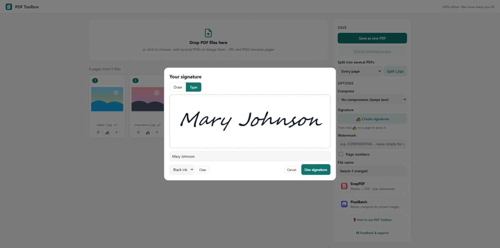

The PDF Toolbox window. Every page is shown as a small picture; under each page are the buttons to rotate it, sign it and remove it. Saving, splitting and the options are on the right.
PDF Toolbox shows every page of the files you add as a small picture. You arrange, rotate or delete pages there, then save the result as a new PDF. Your original files are never changed.
You can add JPG and PNG pictures too. Each picture becomes one page.
2. Join several PDFs into one (merge)
Drag your PDF files onto the box that says Drop PDF files here, or click it and choose them. Add as many as you need.
All pages appear in a row. Drag pages to change the order if you want.
Type a name in File name.
Click Save as one PDF. The new file is saved in your Downloads folder.
3. Reorder, rotate and delete pages
Drag a page to move it to a new place.
Click a page to select it. Click more pages to select several. Select all and Select none are above the pages.
⟳ Rotate selected turns the selected pages a quarter turn – for pages that were scanned sideways.
✕ Delete selected removes the selected pages from the result.
Clear all removes everything so you can start again.
4. Take out some pages (extract)
Add the PDF.
Click the pages you want to keep, so they are marked as selected.
Click Extract selected pages. A new PDF with only those pages is saved.
5. Split one PDF into several files
Add the PDF.
Next to Split into several PDFs choose how: Every page, Every 2, 5 or 10 pages, or By original file (gives back the files you added, after your changes).
Click Split (.zip). A ZIP file with all the parts is saved in Downloads. Right-click it and choose Extract All.
6. Make a PDF smaller (compress)
Under Compress choose:
No compression – keeps the pages exactly as they are. Text can still be selected and searched.
Medium – 150 dpi – good for reading on screen and for e-mail.
Strong – 100 dpi (Pro) – the smallest files.
Under 1 MB, 2 MB or 5 MB (Pro) – PDF Toolbox lowers the quality until the file fits. Useful for websites with an upload limit.
Compression turns each page into a picture. The file gets smaller, but text can no longer be selected or searched. Keep your original file.
7. Sign a PDF (Pro)

Creating a signature by typing a name. Choose Draw instead to write it with the mouse or a pen.
Click ✍ Create signature.
Choose Draw and write your signature with the mouse or a pen, or choose Type and type your name. Pick black or blue ink, then click Use signature.
Move the mouse over the page you want to sign and click the ✍ button on it.
Drag the signature to the right place and use the slider to make it larger or smaller. Click Done.
Click Save as one PDF.
To take a signature off a page again, open that page with ✍ and click Remove from page.
8. Watermark and page numbers (Pro)
Watermark: type a word such as DRAFT or COPY. It is printed lightly across every page.
Page numbers: adds 1, 2, 3 … to the pages of the finished PDF.
9. Free version and Pro
The free version merges up to 3 files at a time and includes reorder, rotate, delete, extract, split and medium compression. Pro is a one-time purchase and adds unlimited files per merge, signing, strong compression and compress-to-size, watermark and page numbers. Click ★ Get Pro at the top to see the price, or Restore purchase if you bought it before.
10. If something goes wrong
A PDF asks for a password or does not open: protected PDFs cannot be edited. Ask the sender for a version without a password.
The saved PDF is larger than before: choose No compression – a PDF that is mostly text is already small.
I cannot find my file: open File Explorer and look in Downloads.
Questions or problems? Write to thequan03072002@gmail.com. PDF Toolbox works offline and your files never leave your PC.